Problem
องค์กรมีข้อจำกัดจาก VPN license เดิม โดยเฉพาะการใช้งานผ่านมือถือหรือแท็บเล็ตที่ต้องเพิ่มค่าใช้จ่าย ทำให้ remote work ไม่ยืดหยุ่นเท่าที่ควร
Senior Project
ออกแบบกระบวนการบูรณาการระบบ VPN ที่ปลอดภัย รองรับหลายอุปกรณ์ และลดข้อจำกัดด้านค่า license โดยใช้ open-source components ร่วมกับ cloud deployment
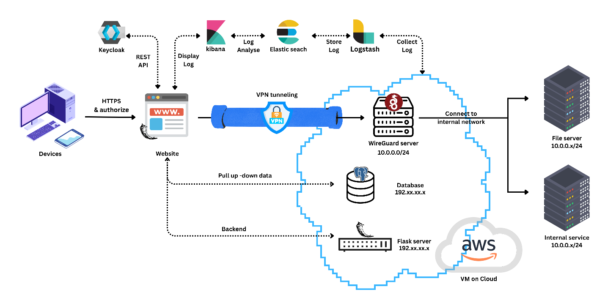
องค์กรมีข้อจำกัดจาก VPN license เดิม โดยเฉพาะการใช้งานผ่านมือถือหรือแท็บเล็ตที่ต้องเพิ่มค่าใช้จ่าย ทำให้ remote work ไม่ยืดหยุ่นเท่าที่ควร
รวม Flask, Keycloak, WireGuard และ PostgreSQL เป็น platform เดียว ให้ผู้ใช้ login ด้วย MFA แล้วสร้าง/ดาวน์โหลด VPN config หรือสแกน QR ได้
ย้ายขึ้น AWS EC2 เพื่อแก้ CG-NAT, ทดสอบ remote access จากภายนอกสำเร็จ, รองรับหลายอุปกรณ์ และเพิ่ม ELK สำหรับ centralized logging
Design Process
ผู้ใช้ต้องผ่าน username/password และ OTP จาก Keycloak ก่อนเข้าถึงไฟล์ VPN configuration
ระบบสร้าง WireGuard peer, จัดสรร IP, สร้าง .conf file และแสดง QR code สำหรับ mobile onboarding
ย้ายจาก local VM ไป AWS EC2 เพื่อให้ระบบมี public IP และรับ connection จาก external network ได้
เพิ่ม Logstash, Elasticsearch และ Kibana เพื่อรวม log จาก Keycloak, Flask และ WireGuard ไว้ใน dashboard เดียว
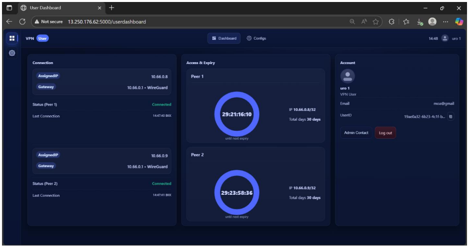
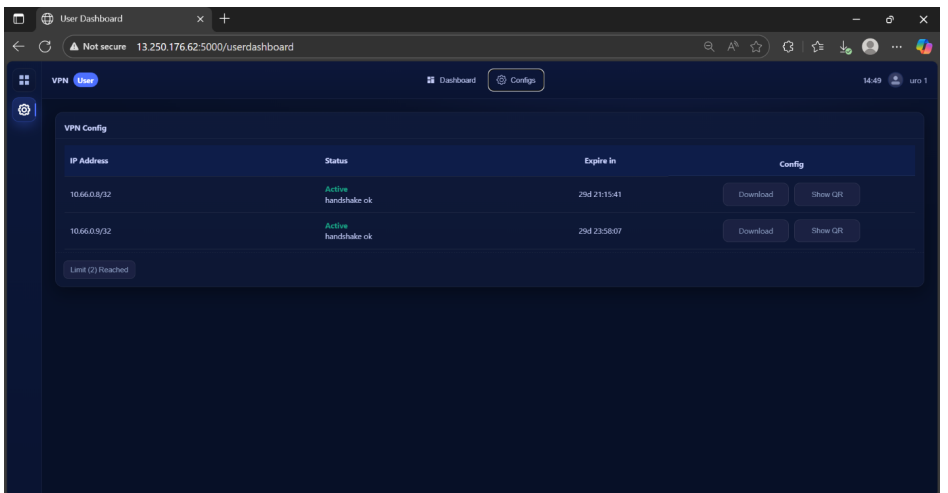
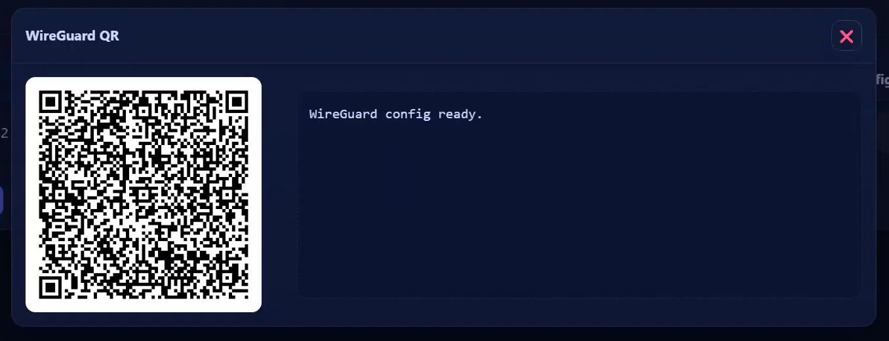
Project Screenshots
User Side
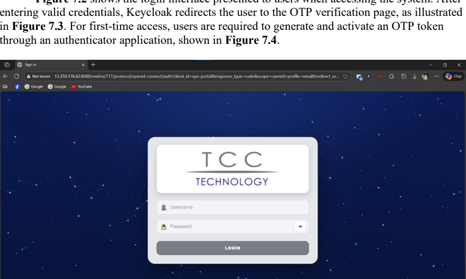
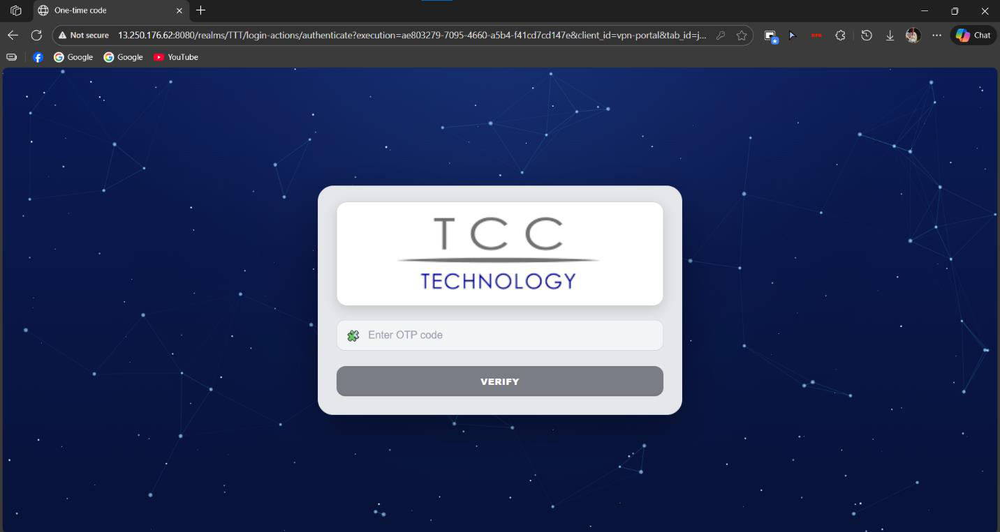
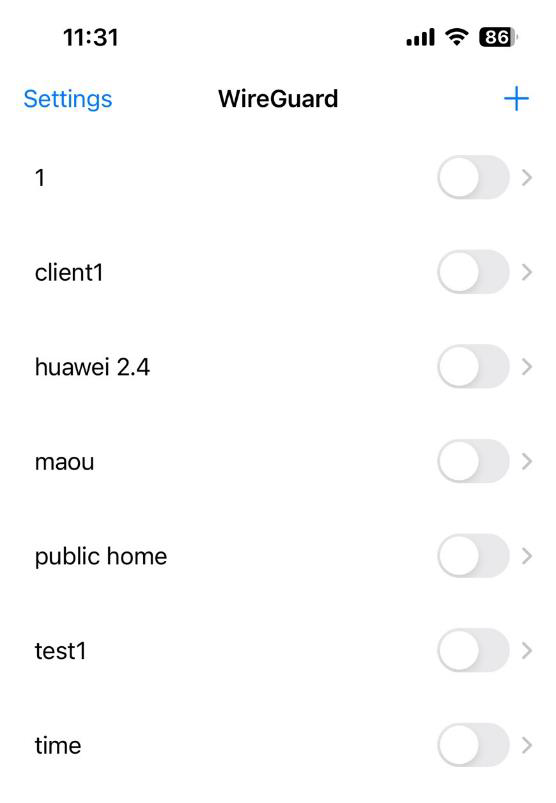
Admin Side
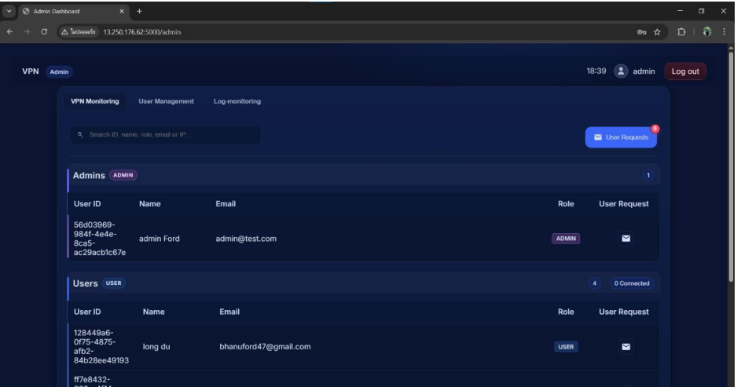
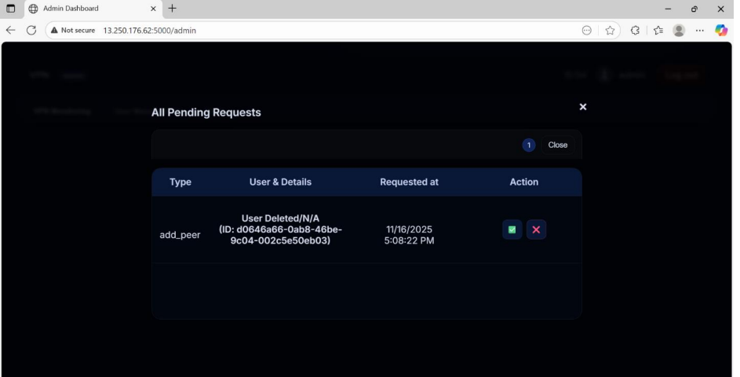
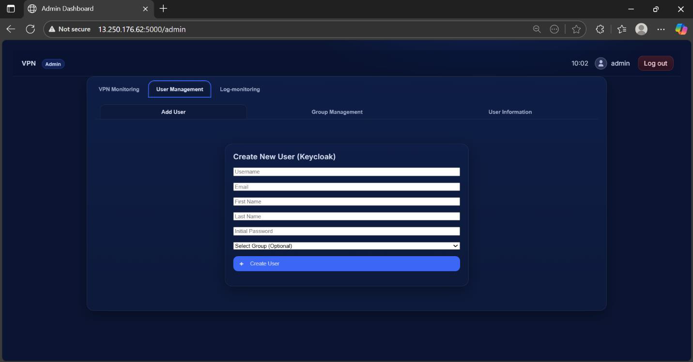
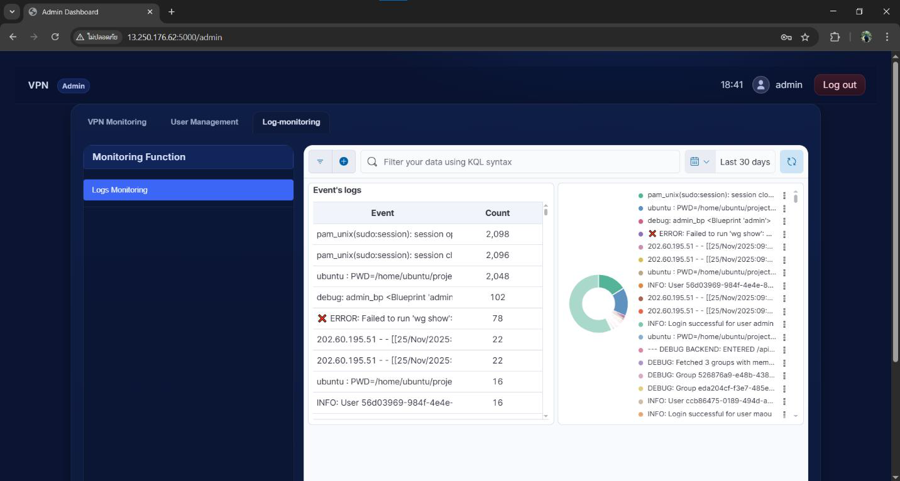
Connectivity Test
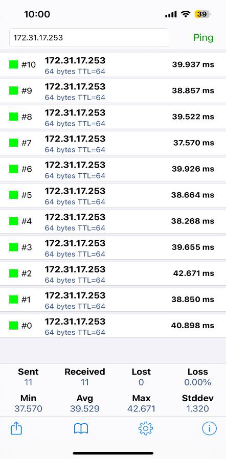
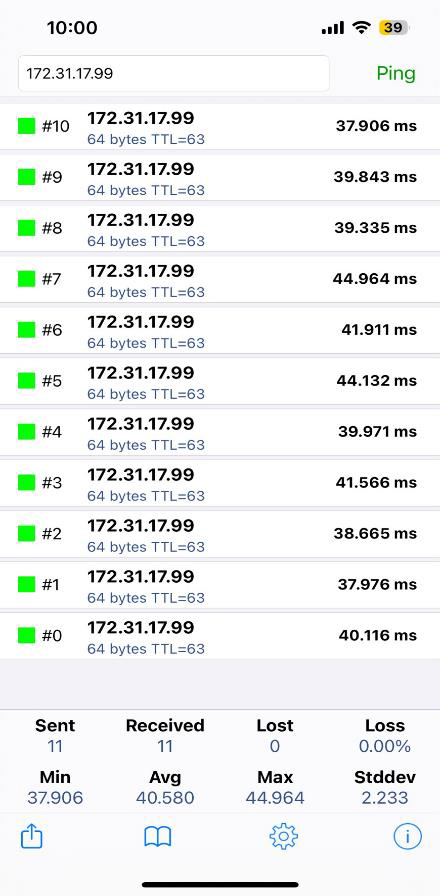
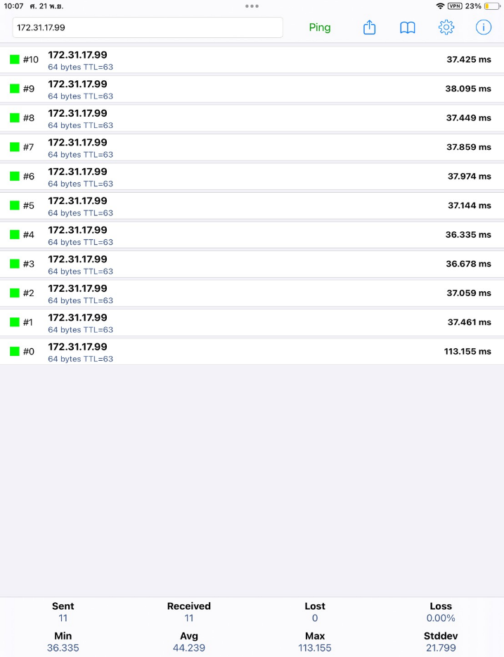